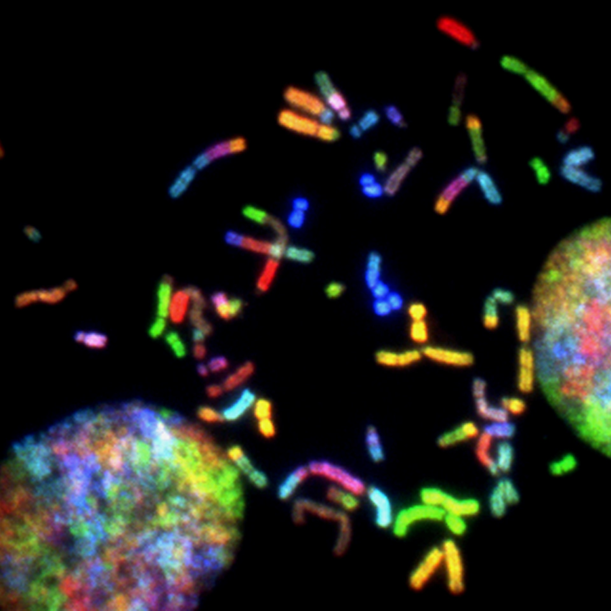

이들은 5060세대로 전후 베이비붐 세대,한국사회의 역동적인 성장기때 젊은 시절 보냈습니다 Old People with Active Lives의 약자로 베이비부머를 대표하는 ‘58년생 개띠’를 의미하기도 합니다 오팔세대는 활기찬 인생을 살아가는 새로운 신중년으로서 전쟁을 겪지 않고 고도성장기에 청년시절을 보냈으며 현대적인 교육을 받은 세대입니다.
또한 보석의 한 종류인 오팔은 사파이어 블루, 에메랄드 초록, 황옥의 노랑, 루비의 빨강, 자수정의 보라색등 모든 보석의 색을 품고 있어, 가장 완전한 보석이며 보는 방향에 따라 다른색을 보여줍니다. 이는 ‘은퇴’라는 새로운 환경을 맞이하며 오팔 보석의 다채로운 색상처럼 자신들만의 색깔로 다채롭게 새 시대를 맞이하는 5060세대의 행보와 비슷하다고도 할 수 있습니다